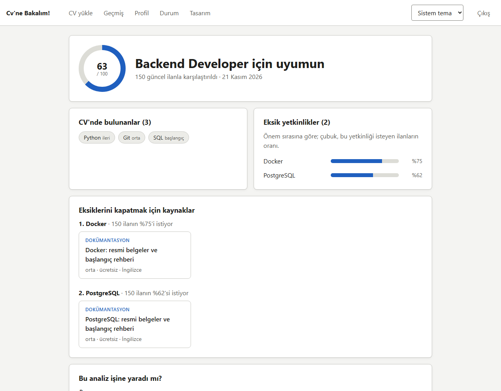
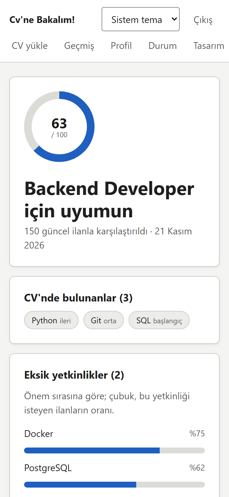

Öğrenciler ve yeni mezunlar için
CV'n hedeflediğin işe ne kadar hazır?
CV'ni yükle, hedef pozisyonu seç. Güncel iş ilanlarıyla karşılaştırıp hangi yetkinliklerin eksik olduğunu, ilanların yüzde kaçının onları istediğini ve eksikleri kapatacak ücretsiz kaynakları gösterelim.
Ücretsiz · Kayıt e-postayla · CV dosyan saklanmaz

Nasıl çalışır?
-
CV'ni yükle
PDF, en fazla 5 MB ve 5 sayfa. Türkçe veya İngilizce.
-
Pozisyonu seç
Backend, Frontend, Veri Bilimci, DevOps, Mobil… 12 pozisyon. CV'n o pozisyonun güncel ilanlarıyla karşılaştırılır.
-
Eksiklerini kapat
Uyum puanını, CV'nde bulunan ve eksik yetkinlikleri talep oranıyla görürsün. Her eksik için Türkçe öncelikli, çoğu ücretsiz eğitim kaynağı önerilir.
Neden güvenebilirsin?
-
CV'n saklanmaz
Dosya sadece analiz sırasında bellekte işlenir. Kalıcı olarak yalnızca çıkarılan yetkinlikler tutulur; istediğin an hesabını ve verilerini silebilirsin.
-
Yapay zeka şirketlerine gitmez
Analiz, ekibin kendi bilgisayarında çalışan açık kaynak bir dil modeliyle yapılır. Ad, e-posta, telefon gibi bilgiler modele verilmeden önce maskelenir.
-
Gerçek ilanlar, gerçek kaynaklar
Talep oranları her gece toplanan güncel ilanlardan hesaplanır. Önerilen bağlantılar uydurma değildir: sadece ekibin derlediği ve düzenli kontrol edilen listeden seçilir.
İndir
Web sürümü tarayıcıda hemen çalışır. Masaüstü ve Android uygulamaları aynı hesabı kullanır.
- Web app.cvnebakalim.com
- Windows Kurulum dosyası
- macOS Kurulum dosyası
- Android Google Play'de yakında
Masaüstü kurulum dosyaları GitHub'daki sürüm sayfasından dağıtılır. iOS sürümü sonraki sürümde.

Sık sorulanlar
Ücretli mi?
Hayır. Cv'ne Bakalım! bir bitirme projesi olarak geliştirildi ve ücretsizdir. Saatte en fazla 5 analiz yapılabilir.
Analiz ne kadar sürer?
Genellikle 1–2 dakika. CV'yi yükledikten sonra sayfayı kapatabilirsin; sonuç Geçmiş'te durur.
Sistem neden bazen açılmıyor?
Uygulama ekibin bilgisayarında çalışıyor; bilgisayar kapalıyken veya bakımdayken erişilemez. Bu sayfa ve yasal metinler her zaman açıktır.
Verilerimi nasıl silerim?
Uygulamada Profil → Hesabımı sil. Uygulamaya giremiyorsan hesap silme sayfasındaki adımları izle.